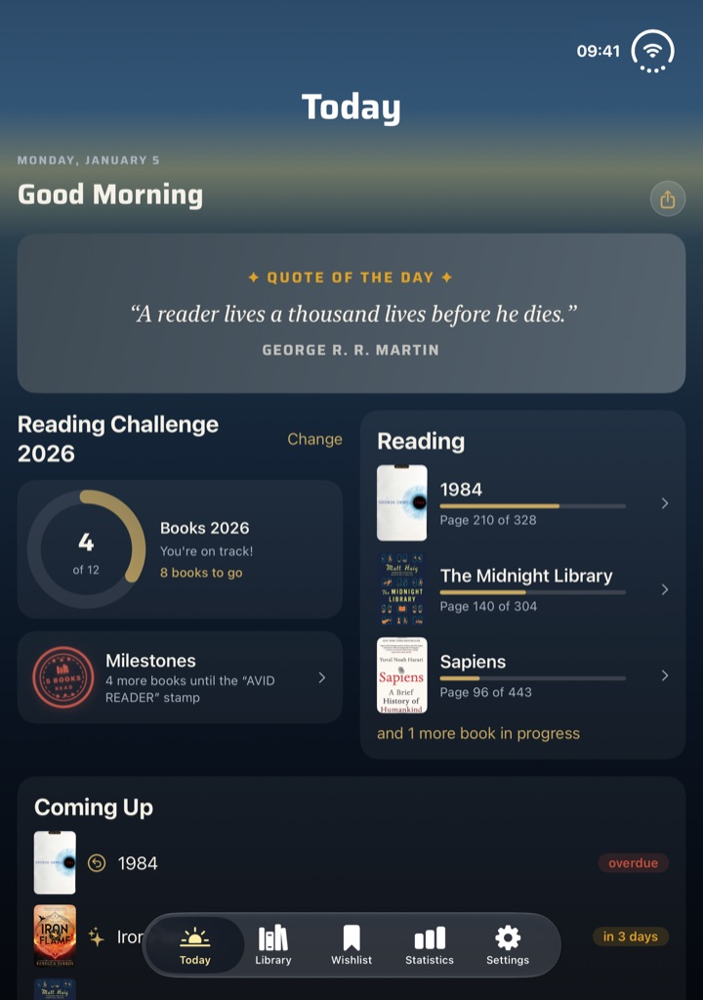
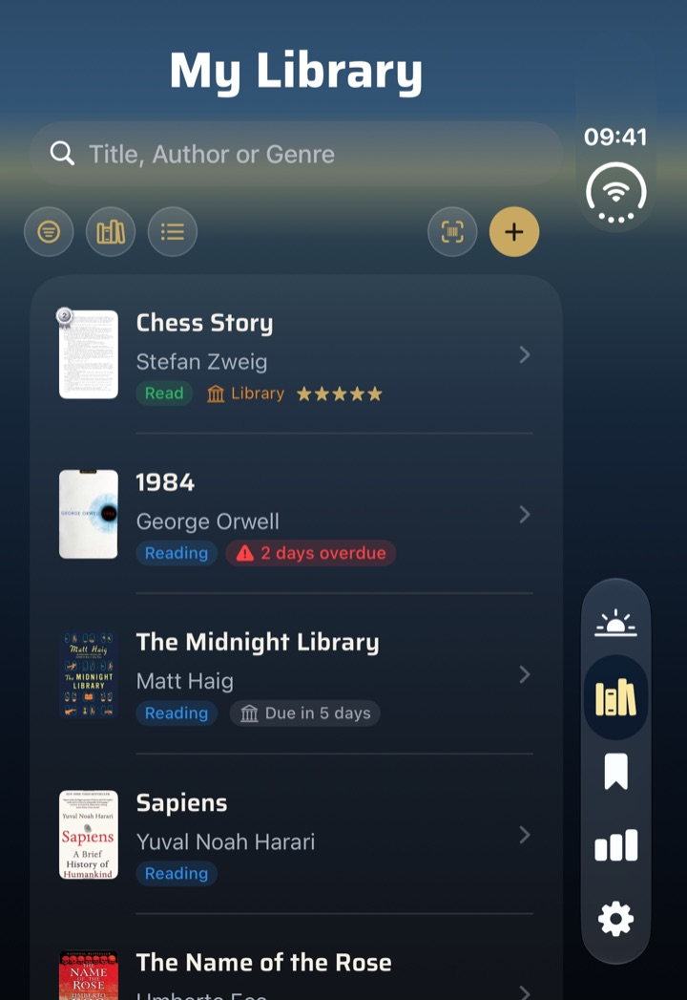

What this update is about
BookSafe 1.6 is the device update: the app is ready for iPhone Duo and uses both its outer and inner display. On iPad in landscape, list and book sit side by side, a running reading session can be ended straight from the Live Activity, and finished reading sessions can now be edited.
This page describes the changes in more detail than fits into the App Store release notes.
Version 1.6 · released 7 October 2026
New
1Ready for iPhone Duo
BookSafe uses both displays of iPhone Duo. Folded, the toolbar runs as a vertical bar along the right edge. So that filter, sorting and view don’t disappear into an overflow menu, they sit in their own row of chips above the list, and the buttons in sheets show ✕ and ✓ instead of text.
Unfolded, the tiles in your library and your own lists line up with the fold: the number of columns is even, so no tile sits in the fold. “Today” and the statistics use the width in two columns. In landscape the list stays wide, and an open book shows the cover to the left of the fold and the details to the right.
In tabletop mode — half open on the table — the reading timer puts cover and reading time above the fold, with “Pause” and “End Session” below.


2iPad in landscape: list and book side by side
On iPad in landscape, library and wishlist show the list on the left and the selected book on the right. The split stays in place while you search with the keyboard open. Portrait stays as you know it.
3End a reading session from the Live Activity
The reading session’s Live Activity now has an “End” button — on the Lock Screen and in the Dynamic Island. After unlocking, BookSafe opens straight to the end page. Because iOS only runs the button once you unlock, the session ends at that moment.
The expanded view in the Dynamic Island has been rearranged: the reading time sits in the control row and stays fully readable past the one-hour mark.
4Edit past reading sessions
In the book detail, every finished session has a pencil after its duration. It opens the “Session” sheet with date and time, duration and pages read. If you change the number of pages, the book’s reading progress moves by the difference.
From six sessions on, “All Sessions (n)” leads to the full list — where older sessions, previously out of reach, can be edited and deleted too. Deleting leaves the reading progress unchanged.
Improved and fixed
- anthologies and collections without an author in the catalogue now take the editor as author
- if a title or author is still missing, “Add Book” now tells you what’s missing instead of silently disabling the button
- VoiceOver reads title, author and status in the tile view
- in the reading timer, “Pause” and “End Session” stack when space is tight instead of wrapping
- in a series opened from “Today” or the statistics, tapping a volume did nothing
- in the release celebration in landscape, “Done” sat below the screen edge
- milestone stamps now carry English names in the English interface
Plus many further refinements. What version 1.5 brought is on the version 1.5 page.
Good to know
| Requirements | iPhone and iPad on iOS 18 or later, Apple Watch on watchOS 11 or later |
|---|---|
| Your data | No account, no tracking. Your library lives on your device and syncs through your own private iCloud. |
| Price | Free for up to 50 books. BookSafe Pro lifts the limit for good: €3.99 once, no subscription. |
| Updating | Comes through the App Store — on iPhone under “App Store → profile → update apps”. |